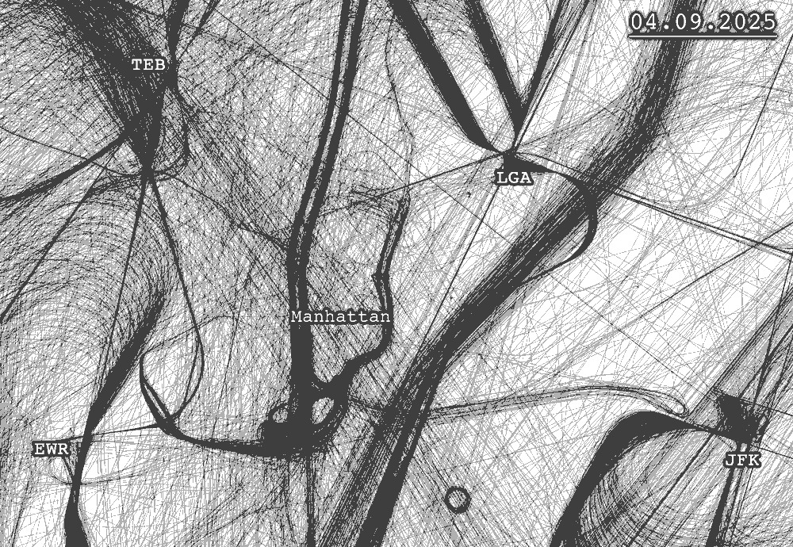
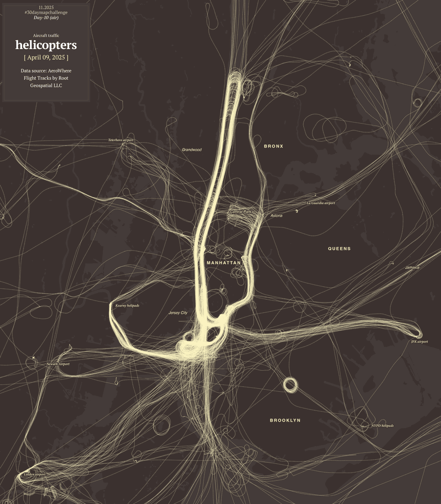
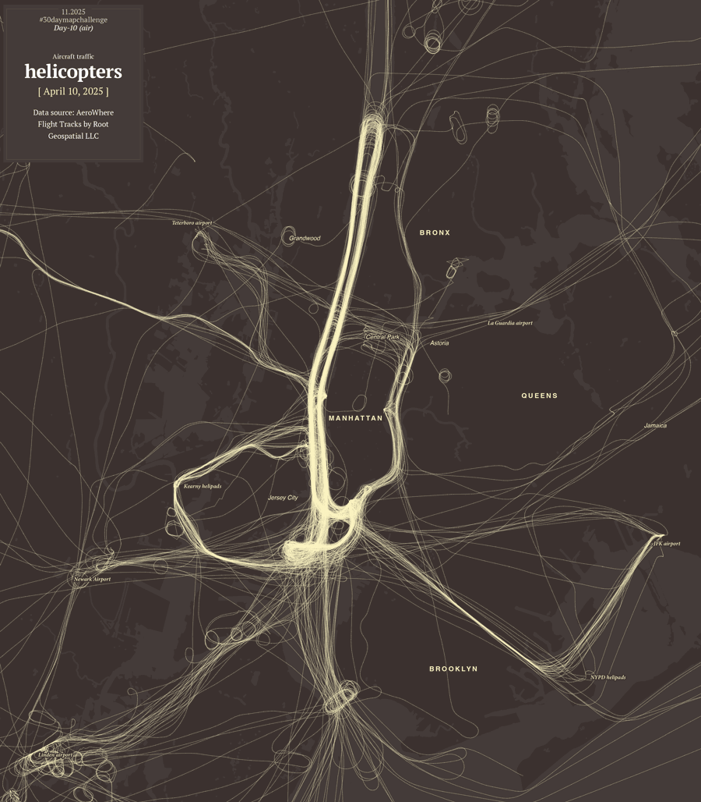
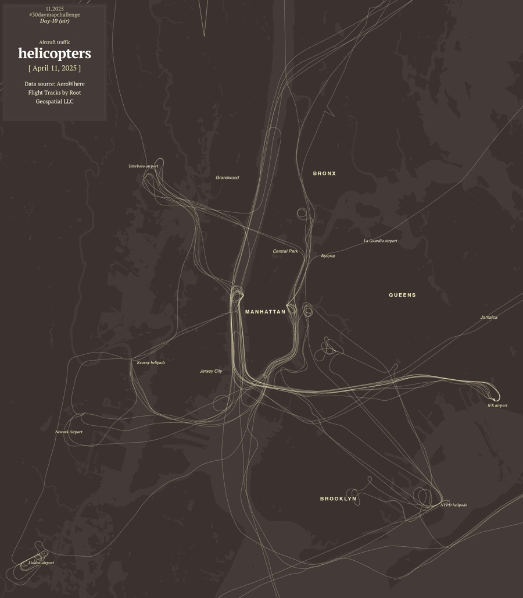
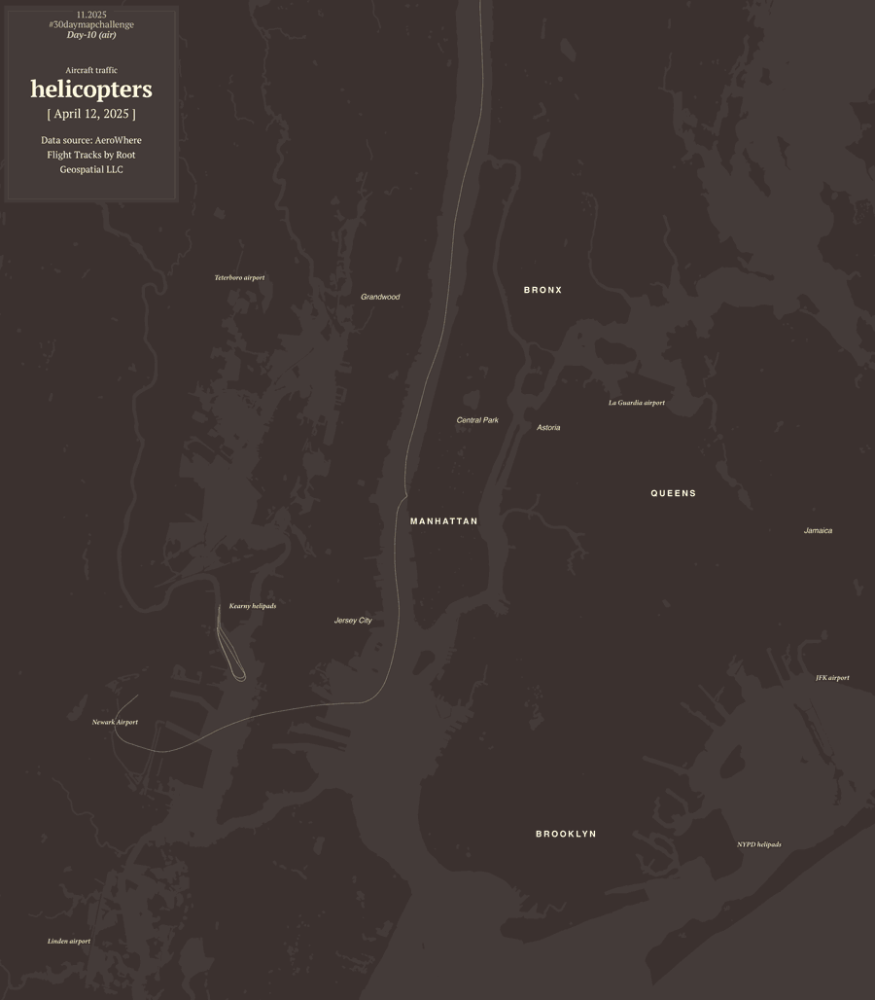
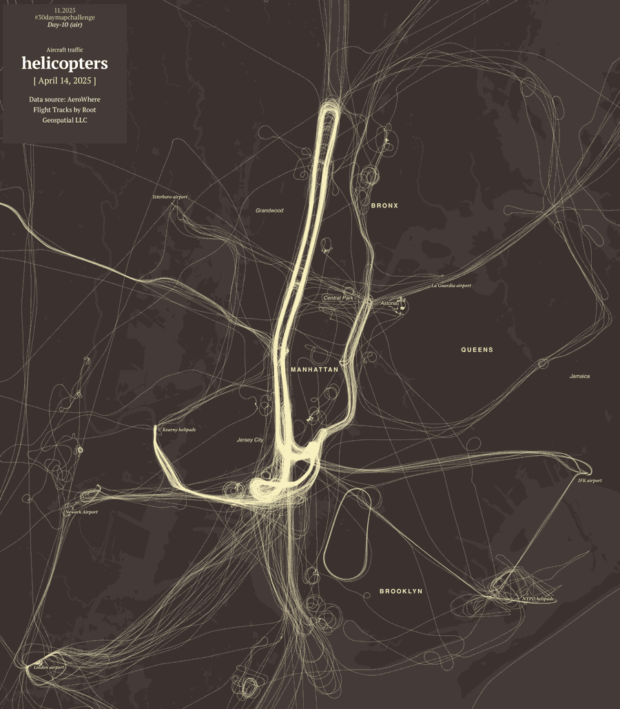

Nov. 2025
How helicopters sketch-out Manhattan
New York City is always bustling with traffic, it doesn’t matter if you’re
talking about
its streets or its skies. There are so many daily flights of all kinds of aircraft that you
can see
the lines they leave behind trace the outline of the Hudson River to the west of Manhattan,
or the
East River in the other side of the island as well.
In the image below, you can see
purple dots
representing air traffic in Arbil 9, 2025.
Observe the straight lines left by airplanes
approaching airports and how these lines converge at crossroads as they land or take
off.
On the
other hand, the most organic patterns are created by helicopters flying low over the rivers;
there
are some loops near the Statue of Liberty, there are even some circles here and there, those
are
probably police helicopters conducting surveillance or belonging to a TV channel.
This phenomenon isn’t unique to this city, but NYC is a place where the intense air
traffic
creates this distinctive pattern. I live just across the East River in Astoria, some
mornings
helicopters doing loops have woken me up at 4am, they are like those mosquitoes that
buzz around
your ears when you are camping outdoors.
But if you live in NYC, even though
helicopters
are annoying, you get used to them. Below is a close-up showing traffic over Manhattan
and its
surroundings in different days of April 2025.

As you might noticed, suddenly, one day everything went a little more quiet on the river
banks.
On April 10, 2025, a Bell 206 helicopter on a sightseeing tour crashed
into
the Hudson River. All six onboard—a family of five Spanish tourist and the
pilot—died.
The skies were paralyzed for a few days, and just for one moment, the shape of the
island was
not drawn by aircraft as usual.
That event took me to explore these curious
patterns in the
air traffic. Check below a few maps looking at the skies of those days but only looking
at
helicopters flying between April 9 - 15.



After looking at that sequence, is kind of shocking to see how the skies returned to
normal in
just a few days. By April 15, the usual patterns were back again, by density of paths,
the 14th
looks almost with even more activity than the days before the accident. Here’s a larger
map of
the following day showing all traffic once more with helicopters highlighted in light
brown and
other aircraft in purple.

It’s a very busy city, and the sky is no exception. This is just a curiosity about how
air
traffic patterns can permanently draw shapes in the sky; it seemed to me that there was
a story
behind the patterns that could be briefly told. The accident that day was tragic; the
city has
many regulations for drones and helicopters, but even so, an accident can happen
anytime,
anywhere.
–Thanks for reading!